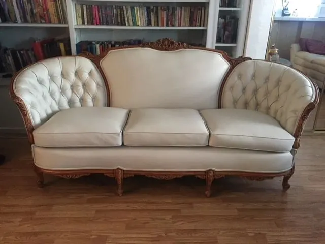
Furniture upholstery
Replacing or retying springs, replacing worn webbing, re-stuffing, repairs, and recovering with new fabric.
1442 Sanchez Street · San Francisco
Sofas, chairs, cushions, car interiors and more, from Jorge Meraz-Baca's shop. Free estimates, pickup, and delivery.
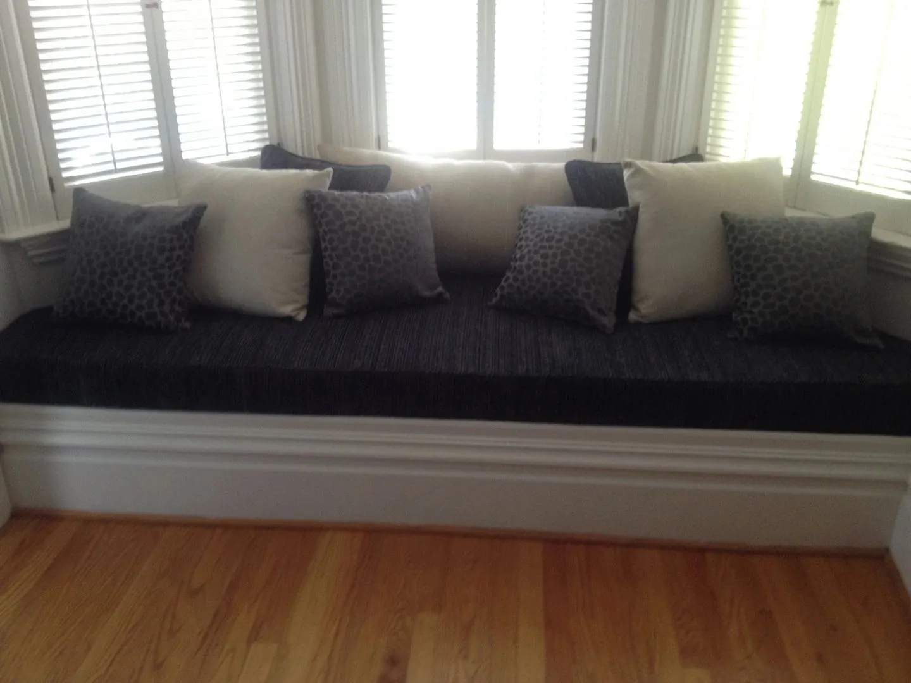
Services
Furniture, wood, cars and even whole rooms.

Replacing or retying springs, replacing worn webbing, re-stuffing, repairs, and recovering with new fabric.
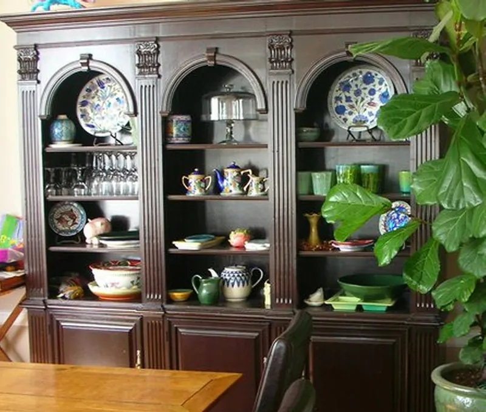
From the feet of a sofa or chair up to bookshelves, desks and tables. Carefully stripped and sanded, then stained and sealed.
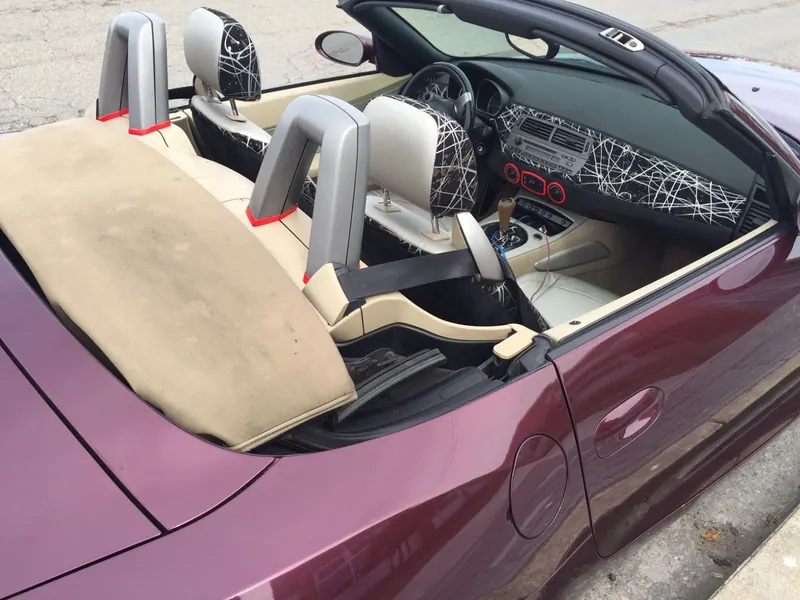
Leather, vinyl, suede, and fabric. We can restore the inside with foam if it needs it, and we help you with the design.
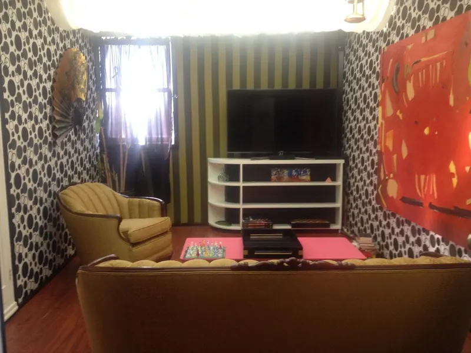
Change the whole feeling of a room, or hide a crumbling or unsightly plaster wall in an easy, inexpensive way.
Upholstery
Custom pillows and cushions of any shape and size, filled with feathers and down or synthetic fillers.
Your fabric or ours. We have a resale license and can buy wholesale fabrics directly from designers, or you can purchase your own fabric at the store of your choice.
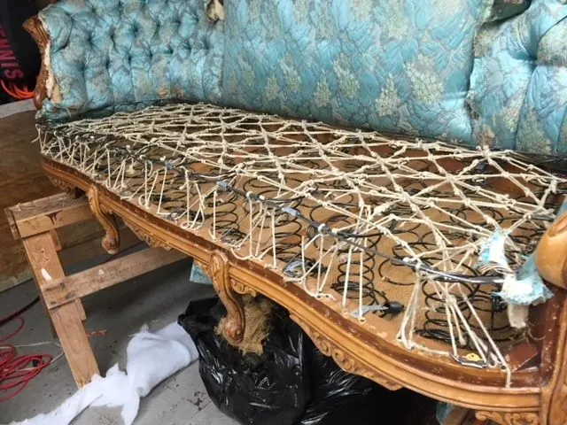
Springs and webbing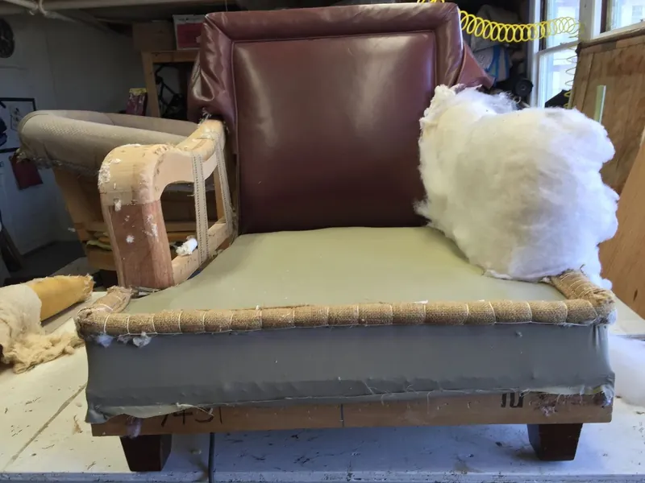
Frame and padding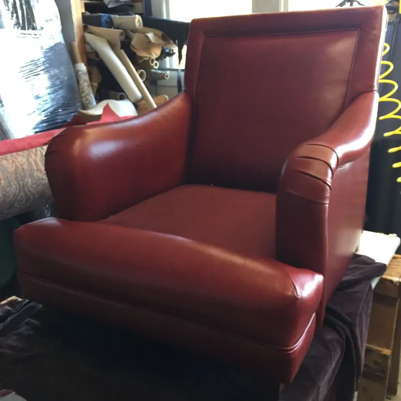
Recovered and finishedOur work
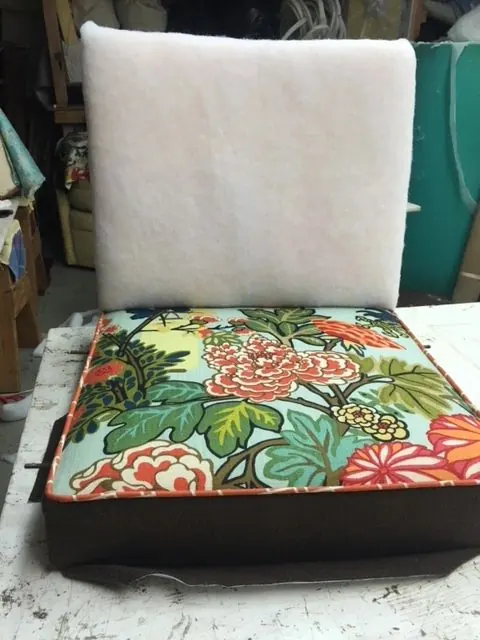
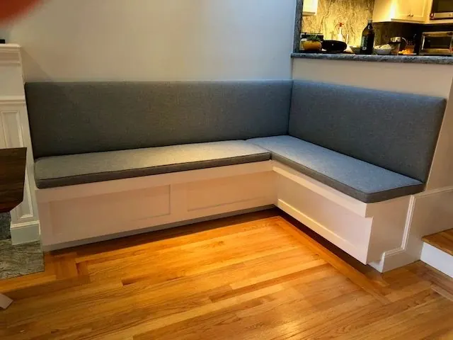
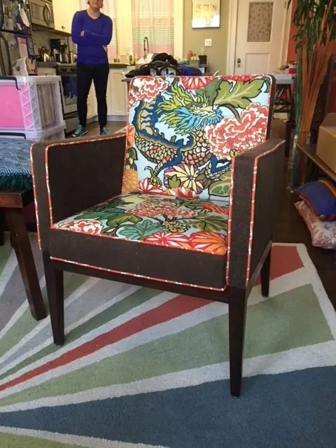
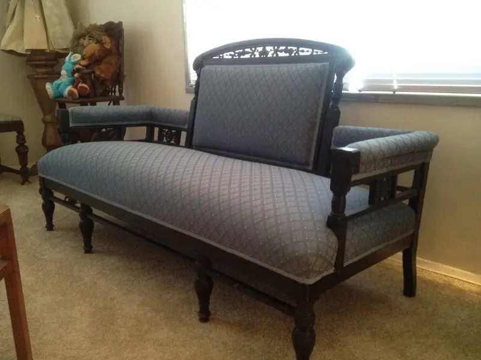
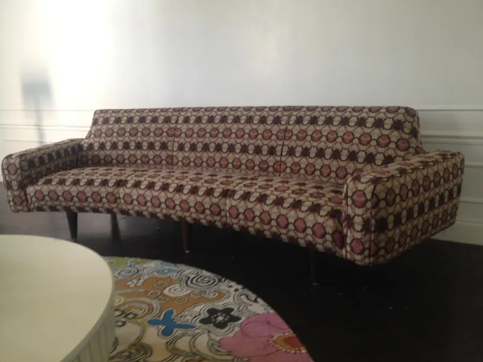
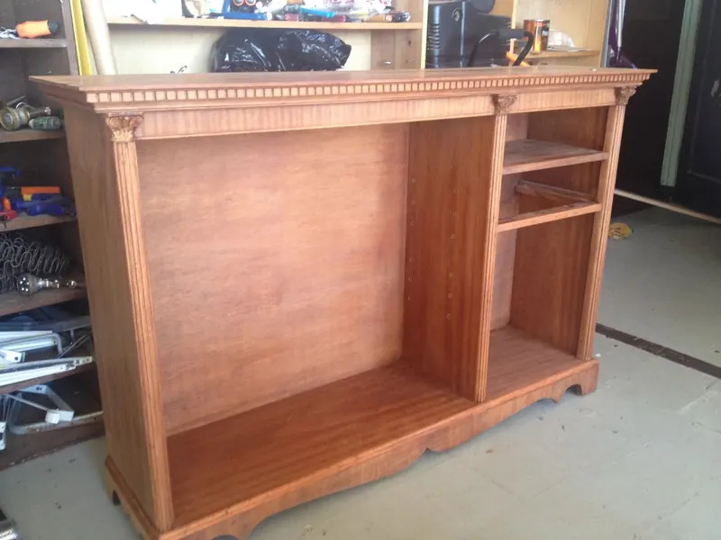
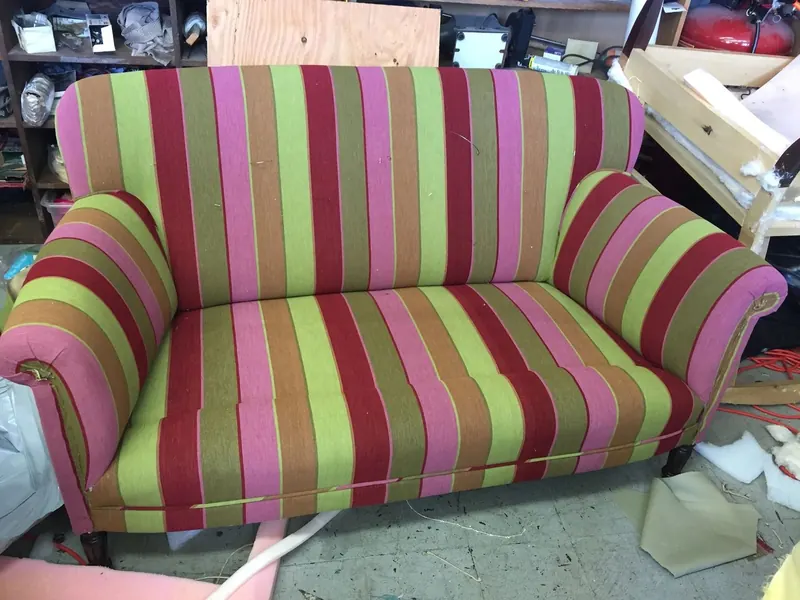
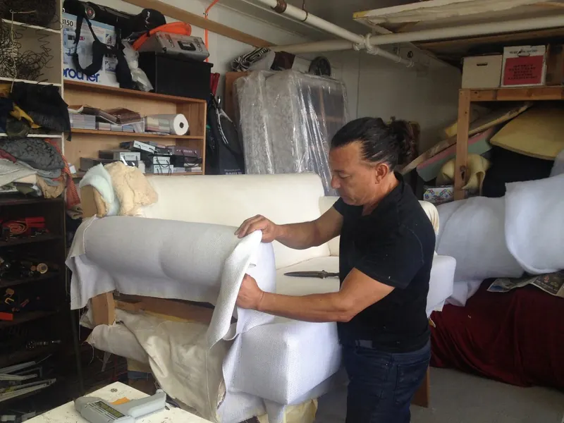
About
I began learning my craft in 1996 in Palo Alto, CA, where I took upholstery classes for 18 months. I learned to convert a damaged piece of furniture into something beautiful and useful. I worked for two different upholstery shops to gain experience.
These experiences helped me open my own business. I love my work because of the level of detail that it requires. I am a perfectionist and want to leave my customers extremely satisfied with their furniture and my services.
On a personal note, I am originally from Honduras in Central America. I live in San Francisco, California. I hope to be able to work on your furniture in the not-so-distant future!
Testimonials
I'm an interior designer and have worked with Jorge on two projects involving recovering and refinishing dining chairs. They were very different - one design was wood framed with velvet and trim detail and the other chrome frames with slung leather. Jorge got frame refinishers on the projects and did an excellent job for both styles! He is warm, patient and committed to a beautiful outcome. I highly recommend him!
As an Interior Designer it is imperative the professionals I work with strive for the best quality workmanship possible. Jorge is that kind of pro. He has completed several projects for me recovering club chairs, ottomans, and dining chairs. All where done with the upmost care and eye for detail. If you have questions he has answers and is willing to go the extra mile to assure satisfaction for me and my clients. I recommend him highly.
Excellent workmanship! Jorge is not only a very good craftsman, but is also a very good person. He was very helpful in selecting the fabric. I am very pleased with the results and I have no hesitation in recommending him.
Contact
Preview note: these are the hours on your site. Your Yelp listing, as Google shows it, has Monday and Tuesday as 8:30 am – 5:00 pm. Tell us which is current and we'll use it everywhere.